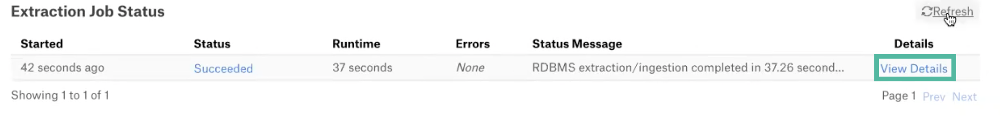

Add-On OCF Connector for dbt: Install and Configure¶
Alation Cloud Service Applies to Alation Cloud Service instances of Alation
Customer Managed Applies to customer-managed instances of Alation
Prerequisites¶
Generate a Manifest File¶
Note
This section is only applicable to dbt Core. Users of dbt Cloud need to make sure they run their dbt project job routinely.
Before you can configure the dbt add-on connector in Alation, request your dbt admin to generate a manifest.json file using the dbt run or dbt docs commands. For more details on the manifest file, refer to Manifest. Place the manifest.json file in a location supported by Alation — AWS S3 or GitHub.
Storage for Manifest Files¶
The following storage locations are supported to store the manifest.json files:
GitHub
AWS S3
Alation needs access to the manifest file on the storage system you chose. If you chose to store it on AWS S3, see Create an AWS S3 User. If you choose to store it on GitHub, see Generate a Personal Access Token on GitHub.
Create an AWS S3 User¶
Note
This section applies if you store the manifest.json files on AWS S3.
If you store multiple manifest files in different folders, access is required to the folders that have manifest files which need to be read by Alation. Create a user in AWS IAM with read-only access to the folder(s) that store the manifest file(s). Make sure to save the values of the access key and secret key. You will need to specify them in Alation when configuring the dbt add-on on your data source.
Generate a Personal Access Token on GitHub¶
Note
This section is applicable, if the manifest.json files are stored on GitHub.
For the steps to create a token, refer to Create a Personal Access Token in GitHub documentation.
URI¶
This section provides the URI required for dbt Cloud or dbt Core.
dbt Cloud URI¶
Format¶
https://cloud.getdbt.com/api/v2/accounts/<Account_ID>
Account ID — Go to dbt > Account Settings. In the address bar you can find the Account_ID.
{kind=link}
Example:
dbt Core¶
GitHub URI¶
To get the GitHub URI:
Go to the repository that stores the manifest.json file and click the manifest.json file.
Click the Raw button.

Copy the part of the URL that inlcudes the repository name as shown below. The copied URL can be used as GitHub URI in Alation.
Example:
https://raw.githubusercontent.com/Project1984-2019/repo/
Access Token for dbt Cloud¶
To get the access token for dbt Cloud, see API Tokens.
Note
API Key is called Access Token for dbt cloud in Alation.
Installation¶
Install the dbt Add-On OCF connector¶
Alation On-Premise¶
Important
Installation of OCF connectors requires Alation Connector Manager to be installed as a prerequisite.
To install an OCF connector:
If this has not been done on your instance, install the Alation Connector Manager: Install Alation Connector Manager.
Ensure that the OCF connector Zip file is available on your local machine.
Install the connector on the Connectors Dashboard page using the steps in Manage Connectors.
Alation Cloud Service¶
Note
On Alation Cloud Service instances, Alation Connector Manager is available by default.
Depending on your network configuration, you may need to use Alation Agent to connect to databases.
Connection via Alation Agent¶
Ensure that Alation Agent is enabled on your Alation instance. If necessary, create a Support ticket with Alation for an Alation representative to enable the Alation Agent feature on your instance and to receive the Alation Agent installer.
Connection Without Agent¶
To install an OCF connector:
Ensure that the OCF connector Zip file is available on your local machine.
Install the connector on the Connectors Dashboard page using the steps in Manage Connectors.
Note
Install the dbt add-on connector on the same Alation Agent on which the primary connector is installed.
Configuration for dbt 2.1.4 and Earlier¶
Configuration for Snowflake OCF connector version 2.2.9 and later on Alation version 2023.3.2.1 and later is different. See Configuration for Snowflake OCF (2.2.9 and later).
Enable the dbt Connector¶
To use the dbt add-on connector:
Go to Admin Settings > Server Admin > Feature Configuration.
Enable the Enable DBT Connector for OCF RDBMS sources (Paid Feature) flag. By default, this flag is disabled.
Enabling this feature will add the dbt connector configuration fields to the Settings page of the supported primary connectors (Snowflake, Redshift, PostgreSQL).
General Settings¶
After you have enabled the feature flag of the dbt connector, you can configure extraction from dbt on the General Settings tab of the primary connector:
In Add-On Connector Settings, enable the Configure DBT OCF connector toggle. Once you enable the toggle, the DBT configuration settings fields will appear.
Choose the DBT Configuration Settings (DBT Cloud or DBT Core) and click Save.
If you selected DBT Cloud, specify the DBT configuration settings for DBT Cloud.
Parameter
Description
Cloud URL
Specify the dbt Cloud URL.
Project(s) name
Specify the projects name separated by comma.
Example: project1, project2
Access token
Specify the dbt Cloud API Key assigned to the account Alation will use to make the API calls.
If you selected DBT core, Specify the DBT configuration settings for DBT Core.
Parameter
Description
Repository type
Select a repository type from the droplist. The supported repository types are:
GitHub
Amazon S3
GitHub
GitHub URL
Specify the GitHub URI in the required format.
Manifest file(s) location
Specify the manifest.json file locations separated by comma. The manifest.json file path:
Works with or without the leading slash and the trailing slash.
Folder name is case sensitive.
Example: dbt/Manifest1/project1, dbt/Manifest2/project2
Access Token
Specify the GitHub personal access token.
AWS S3
Region
Specify the AWS S3 region. Example: us-east-1
Bucket Name
Specify the AWS S3 bucket name.
Manifest file(s) location
Specify the manifest.json file locations separated by comma. The manifest.json file path:
Must not contain leading slash and trailing slash.
Folder name is case sensitive.
Example: dbt/Manifest1/project1, dbt/Manifest2/project2
Access Key
Provide the AWS access key ID of the IAM user. Make sure that the IAM user has access to the destination bucket.
Secret key
Specify the secret key.
Click Save.
{kind=link}
Configuration for dbt 3.0.7 and Higher¶
To configure the add-on dbt OCF connector on Snowflake, you must perform these steps:
dbt Cloud
{kind=link}
dbt Core
{kind=link}
Enable the dbt Connector for Snowflake¶
To use the dbt OCF connector as an add-on connector on Snowflake, perform these steps:
Go to the General Settings tab in the Settings page of your Snowflake data source and click the DBT tab.
Enable the Configure the DBT OCF Connector toggle.
Configure Authentication¶
Based on whether you are using dbt Cloud or dbt Core, configure the authentication.
For dbt Cloud¶
On the Settings page of your Snowflake data source, go to General Settings > DBT.
Under the Configure Authentication section, click DBT Cloud.
Specify the DBT configuration settings for DBT Cloud.
Parameter
Description
DBT Cloud URL
Specify the dbt Cloud URL.
Project(s) name
Specify the projects name separated by comma.
Example: project1, project2
Access token
Specify the dbt Cloud API Key assigned to the account Alation will use to make the API calls.
Click Save.
For dbt Core¶
On the Settings page of your Snowflake data source, go to General Settings > DBT.
Under the Configure Authentication section, click DBT Core.
Specify the DBT configuration settings for DBT Core.
Parameter
Description
GitHub
GitHub URL
Specify the GitHub URI in the required format.
Manifest file(s) location
Specify the manifest.json file locations separated by comma. The manifest.json file path:
Works with or without the leading slash and the trailing slash.
Folder name is case sensitive.
Example: dbt/Manifest1/project1, dbt/Manifest2/project2
Access Token
Specify the GitHub personal access token.
AWS S3
Region
Specify the AWS S3 region. Example: us-east-1
Bucket Name
Specify the AWS S3 bucket name.
Manifest file(s) location
Specify the manifest.json file locations separated by comma. The manifest.json file path:
Must not contain leading slash and trailing slash.
Folder name is case sensitive.
Example: dbt/Manifest1/project1, dbt/Manifest2/project2
Access Key
Provide the AWS access key ID of the IAM user. Make sure that the IAM user has access to the destination bucket.
Secret key
Specify the secret key.
Click Save.
Test the Connection¶
To validate the network connectivity, go to General Settings > DBT > Test Connection on the Settings page of your Snowflake data source and click Test.
A dialog box appears confirming the status of the connection test.
Configure Logging¶
To set the logging level for your dbt OCF connector logs, perform these steps:
On the Settings page of your Snowflake OCF data source, go to General Settings > DBT > Connector logs.
Select a logging level for the connector logs and click Save.
The available log levels are based on the Log4j framework.
Metadata Extraction¶
The metadata extraction from dbt will run as a child job of the primary connector’s MDE. To make sure that the extraction from dbt is successful:
In the Extract Job Status section, click View Details.
The successful extraction message will be displayed as shown below.
The descriptions extracted from dbt will be cataloged as Source Comments as shown below.
Note
On the Snowflake data source, there is 90 minutes latency time to update views ACCOUNT_USAGE views. So the new descriptions created will be extracted during metadata extraction after the latency time. Refer to Account Usage — Snowflake Documentation for information about the latency time for each item.
Note
The alias config can be used to change the name of a model’s identifier in the database. To display the alias name instead of the table name in the catalog, make sure you add the alias name to the model file before generating the manifest file. See Custom Aliases for more details.
Lineage¶
Note
Lineage is available from dbt Add-On OCF connector version 2.0.0 or later and Alation version 2023.1 or later. See Lineage Support for the types of materializations supported for each data source.
Note
Query Log Ingestion must be performed first to get the Lineage generated in Alation.
The dbt Connector will add a Jinja tab to the dataflow object if Alation can match the compiled SQL from dbt to SQL extracted by the base connector’s QLI process.
Alation now provides the ability to represent lineage objects based on their logical alignment with the data source and dataflow objects: the Compound Layout View of the lineage data. The view supports the Show Parent/Show Children functionality which will display additional upstream and downstream lineage nodes that are not directly linked to the main object.
This feature is not enabled by default. To make it available on your Alation instance, set the following alation_conf flags to True:
alation.feature_flags.DEV_enable_lineage_asset_grouping—Enables the Compound Layout View toggle on the Lineage tab.
alation.feature_flags.DEV_enable_lineage_asset_grouping—Enables the three-dot menu on lineage nodes on the Compound Layout View.
alation.feature_flags.DEV_enable_lineage_collection_nodes_modal—Adds the Show Parent/Show Children functionality.
On the lineage diagram for objects that have dbt lineage, users will see the dbt dataflow objects grouped together for the supported data sources.
Note
Compound Layout View currently doesn’t support column-level lineage.
Troubleshooting¶
Refer to Troubleshooting.